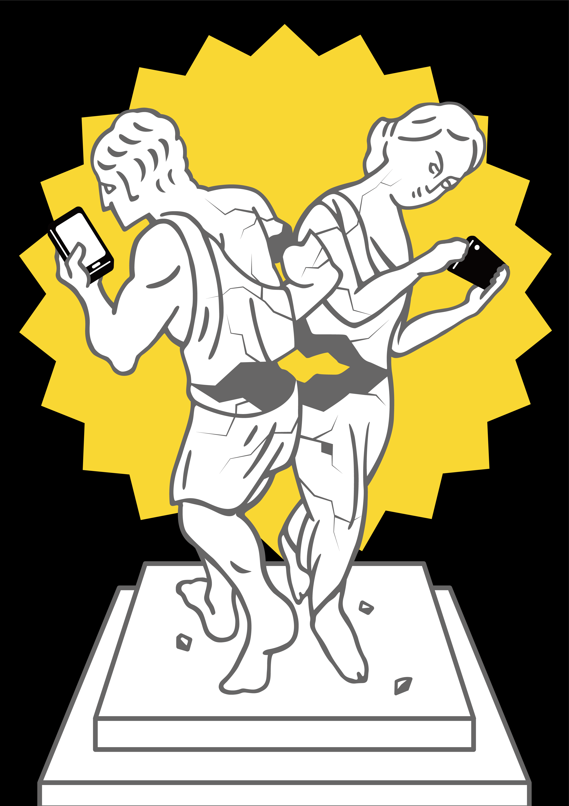

授業課題-注意・推奨グラフィック制作（歩きスマホに注意）-
課題内容
様々な状況を視覚化し、文字情報（記号含む）を使用せず情報を伝達する。
特定の状況についての注意喚起や、特定の行動を促すことを目的とする（テーマは任意）。
使用ツール
アクリル絵の具で制作し提出したものをIllustratorでトレースし仕上げた。
制作期間
1週間程度
制作について
テキストや記号表現の禁止という制約はもちろん、状況説明とグラフィックとしての面白さの両立に最後まで苦労した。
スマートフォンの画面に気を取られ注意が散漫になっている様子を、「視線／姿勢が固定されている」石膏像によって比喩的に表し、
それらがすれ違いざまにぶつかって壊れる描写によって、歩きスマホの危険性を表現した。